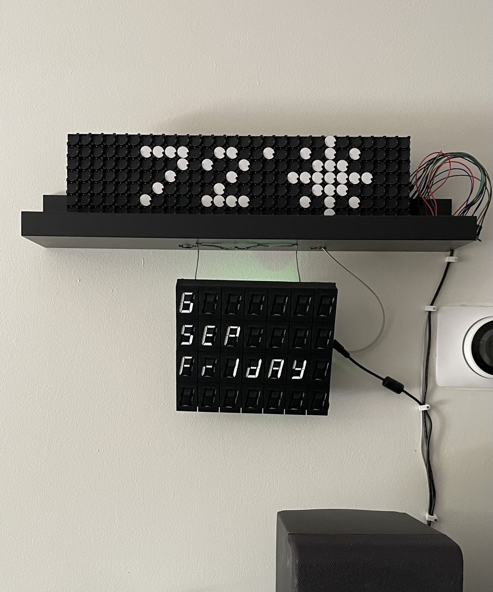
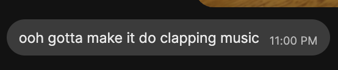
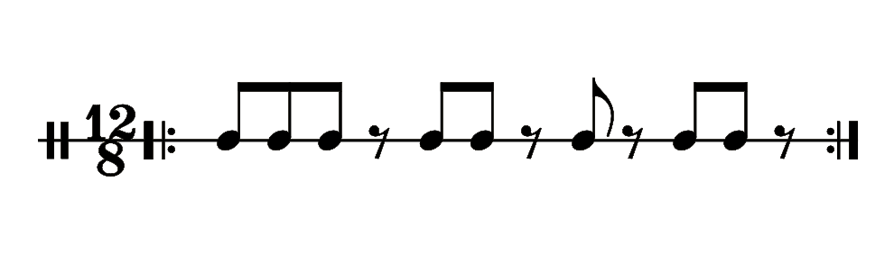
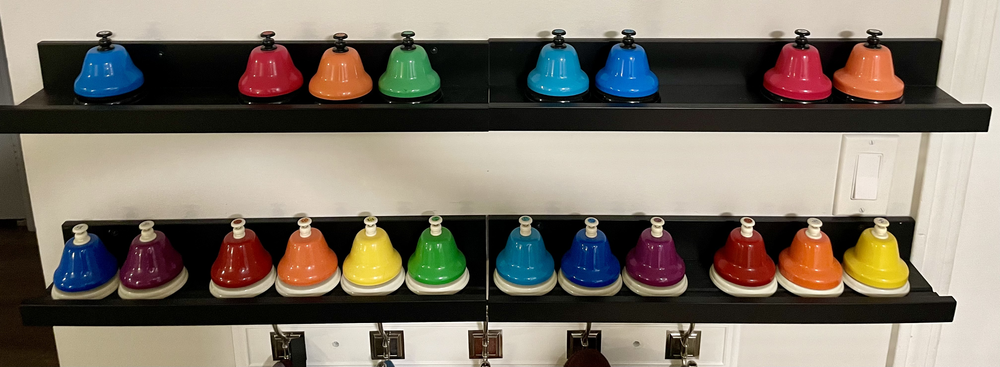

Clapping Music for two flip-disc displays
I present unto you: Steve Reich’s Clapping Music, as performed by a pair of flip-disc displays:
Read on for its provenance…
Down the flip-disc rabbit hole
Several years ago, I became obsessed with flip-disc displays and the art made with them:
As a result, my partner gifted me a pair of AlphaZeta boards: one 7x28 flip-dots display, and one 7x4 seven-segment flip-digits (“Vane”) display. We set them up in our living room and programmed them to show the date, current outside temperature, and current weather (prioritizing upcoming precipitation), updated on the half hour.1

Our display has been running for nearly three years at this point, with only minimal intervention (i.e., manual restarts after the power goes off2). It makes me so happy! Two unexpected benefits:
- My internal mapping of temperature (Farenheit) to garments of clothing I should put on before going outside? MUCH better.
- Passive awareness of clock time, as the shickshick update on the hour/half hour is a nice reminder that I need to jump into that meeting/head out to the bus/consider going to bed.
The source of that mysterious ticking noise
One of my favorite things about electromechanical displays is how visceral they are—that tiny “chk!” when changing state. The two displays sound different from one another: while a single dot makes a soft snick, such that updating many dots yields a whirring noise, a single digit’s segment makes a much sharper clack, and a fast digits update creates an agressive clacking din.
As soon as we had successfully sent commands to the boards (a win in its own right!), I started playing around with playing basic rhythms with them. I sent a video of a beat to a musician/composer friend, whose immediate response was

They were right: I did gotta make it do clapping music. Immediately. :D
Clapping Flipping music
Steve Reich’s Clapping Music is a composition in which two performers (or sets of performers) repeatedly clap a single 12-beat pattern. After eight or twelve repeats, the second performer shifts their position in the pattern back by a single beat. This process is repeated until the second performer has shifted back to playing the original no-offset pattern. The shifting offset causes a delightful phasing effect for listeners.
Here is the clapped pattern:

and someone else’s very nice visualisation of its performance:The code for performing this on two flip-disc displays is relatively simple:
function _clapping_music(sink_dots, sink_digits; pause=0.15,
clap_pattern=Bool[1, 1, 1, 0, 1, 1, 0, 1, 0, 1, 1, 0],
num_repeats=12, num_shifts=length(clap_pattern) + 1,
num_dots_to_set=28, num_digits_to_set=2)
i_pattern_shift = 0
for _ in 1:num_shifts
for _ in 1:num_repeats, i_pattern in eachindex(clap_pattern)
clap_pattern[i_pattern] &&
write_to_sink(sink_dots, rand(0x00:0x7F, num_dots_to_set))
clap_pattern[mod1(i_pattern + i_pattern_shift, length(clap_pattern))] &&
write_to_sink(sink_digits, rand(0x00:0x7F, num_digits_to_set))
sleep(pause)
end
i_pattern_shift += 1
end
endThe included parameters are:
pause: Adjusts the playback speed-
clap_pattern,num_repeats,num_shifts: While the default composition is Reich’s, the same approach can be used to play any other pattern with any other shift approach. I thought it could be fun to play with these! (Also, sometimes one wants to demo the piece without playing through the whole thing…) -
num_dots_to_set,num_digit_segments_to_set: The relative volume difference between a single disc flipping on each of the two boards was noticeable enough that, if the same number of discs were flipped per “clap” on each board, the digits board drowned out the dots board. I therefore cut down the number of flip-digit segments toggled until the boards “clapped” at roughly the same volume. Due to randomness in discs flipped, this is actually the maximum number of discs flipped per clap (e.g., all “on” to all “off”), but in practice the variation is mild enough that it sounds good enough, and I don’t need to keep track of and adjust the previous state.
The resultant performance sounds pretty cool:
This is an abridged version, where I repeat each bar only twice instead of all 12 times; the full unabridged performance is at the top of this post.
Playing around with different clap patterns is also fun:
# Variant A
clap_pattern = Bool[1, 0, 0, 1, 1, 1]
pause=0.12
num_repeats=2
num_dots_to_set=14
num_digits_to_set=4# Variant B
clap_pattern = Bool[1, 1, 0, 1, 1, 1, 0, 1, 1, 0, 1, 0, 1, 0, 0, 0]
pause=0.15
num_repeats=2
num_dots_to_set=28
num_digits_to_set=14I particularly enjoy that, because the two boards have different disc flip timbres, the overall effect is of two different performers—just as there would be with two human performers with slightly different claps. While the piece could just as easily be performed on a single flip-disc board, or on two different boards of the same type, the current presentation is quite pleasing.
What’s next?
Yet to be determined! If you have fun ideas to try—or additional electromechanical displays for me to play with!—do reach out. :) A friend recently suggested adding the set of chromatic rainbow desk bells displayed nearby to the performance, which would be pretty cool; I’m still mulling over how best to implement her idea. If you want to pair with me on that….

The full code for this display—including set-up instructions—is available on GitHub. Thanks to AF for filming the examples here, and to Cosmo for putting up with us being annoying while she was trying to sleep.
Footnotes
-
This setup took non-zero effort: this was my first real Raspberry Pi project, and while the AlphaZeta boards shipped with a basic Python application installed on a companion Raspberry Pi, we wanted lower-level control of their pixel arrays. We therefore needed to set up our Raspberry Pi, send serial commands to flip individual discs/segments on the display boards (using AlphaZeta’s serial communication protocol), and write (in Julia) the higher-level applications to display static text, scrolling text, and weather. We also had fun figuring out how we wanted to dislpay the project, and ended up modifying a spare Ikea shelf for that purpose.↩︎
-
Yes, I know this is automatable, I just haven’t done it yet!↩︎
- Created: 2024-09-14
- Last updated: 2024-09-14
- Type: Project write-up
- Tags: electromechanical-display, raspberry-pi, music, programming, hardware, software, julia